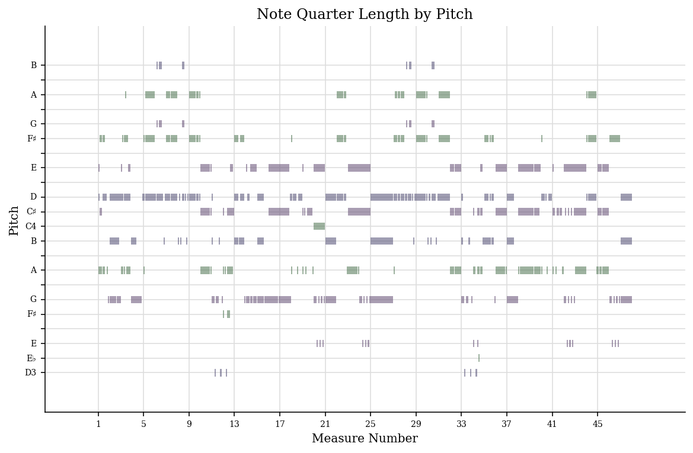
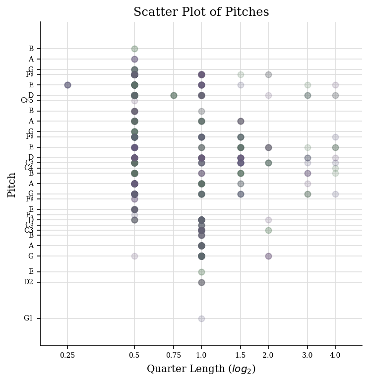
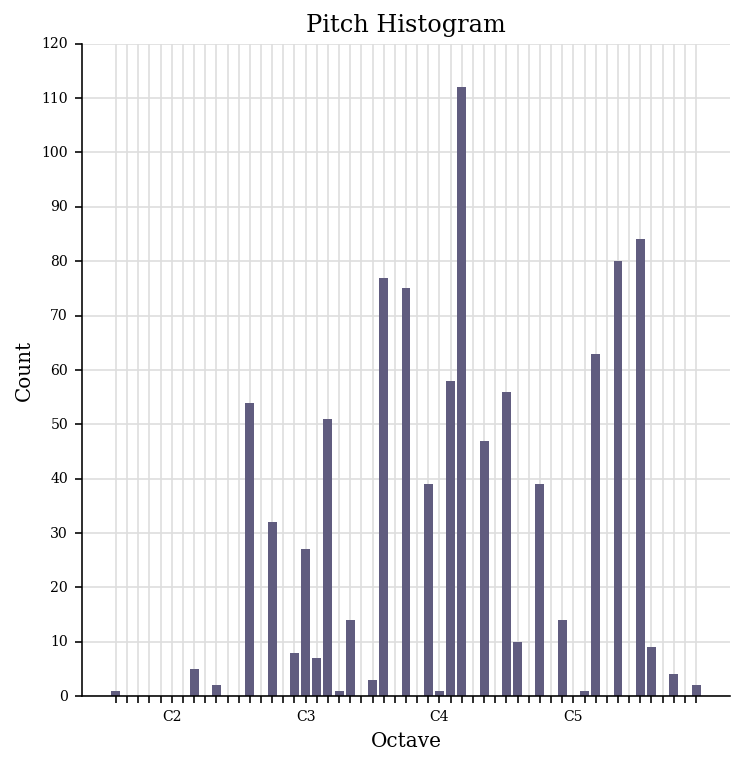

The jSymbolic .csv file I generated for 'After the Gold Rush' can be downloaded here.
jSymbolic analysis of the transcribed piece can by found below. In selecting additional features for the analysis I chose the ones I believe can be relevant and interesting for this song (e.g variation of dynamics as in the piece it changes few times, or
voice equality-range, as there were very high and very low notes, and this values shows the standard deviation of differences between these notes).
Number of Pitches: 30
Most Common Pitch: 62
Mean Tempo: 114.1
Number of Pitch Classes:9
Most Common Pitch Class:2
Tempo Variability: 0.6763
Number of Common Pitches: 1
Prevalence of MostCommon Pitch: 0.1101
Minimum Note Duration: 0
Number of Common Pitch Classes: 1
Pitch Variability: 11.12
Maximum Note Duration: 3.025
Range: 52
Major or Minor: 0
Average Note Duration: 0.4661
Strong Tonal Centres:2
Most Common Melodic Interval: 0
Rhythmic Variability: 0.03847
Mean Pitch: 61.39
Number of Common Melodic Intervals: 3
Voice Equality-Range: 19.9
Mean Pitch Class: 5.16
Repeated Notes: 0.4342
Variation of Dynamics: 4.37
Task 2
music21 analysis and visualisation
Below there are three analytical visualisations of 'After the Gold Rush' made with music21 software.

Piano roll of pitches illustrates how each pitch changed through the song. It takes into account the length of the notes and their order.

Scatter plot of pites correlates pitch againt the length of the notes.

Pitch histogram shows how many times each note was played in this song.
Analysis of this visual representation indicates that most common pitch was D4. This value corresponds with jSymbolic output presented above.